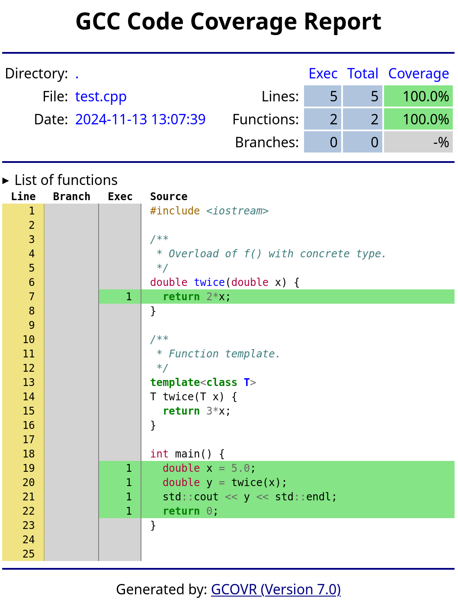
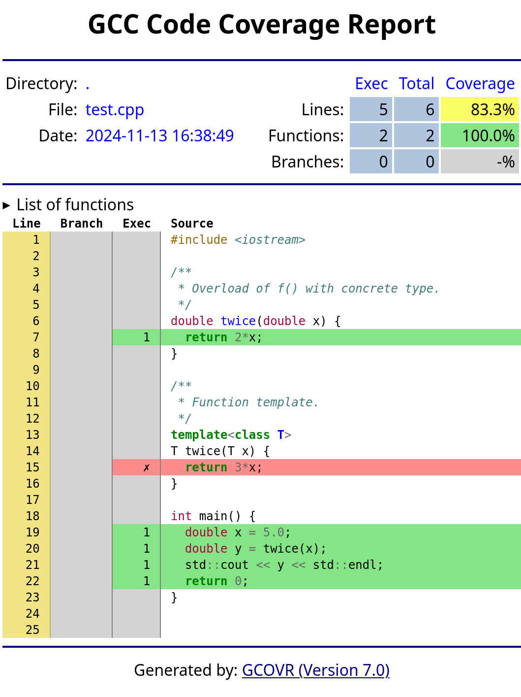

Overview of workflow
The basic workflow is as follows:
- Build tests with code coverage enabled.
- Run tests.
- Use
gcovrto create a code coverage report from that execution in a JSON file. - Use
doxideto create a line data report from the original source files in a JSON file. - Use
gcovragain to create a final code coverage report in HTML, merging the two JSON files created in steps 3 and 4.
As we shall see, the lines of function templates that have not been instantiated will be reported as uncovered in the final report.
Preliminaries
You will need to install Gcovr and Doxide for this to work. The former is readily available from Linux distributions and as a Python package installable via pip; see the installation instructions. The latter you are unlikely to find in your Linux distribution just yet, but there are Linux, Mac and Windows packages available; see the installation instructions—you will need the absolute latest version at time of writing, which is 0.7.0.
Working example
We will consider the following simple program:
#include <iostream>
/**
* Overload of f() with concrete type.
*/
double twice(double x) {
return 2*x;
}
/**
* Function template.
*/
template<class T>
T twice(T x) {
return 3*x; // deliberate error
}
int main() {
double x = 5.0;
double y = twice(x);
std::cout << y << std::endl;
return 0;
}This has a function twice() that multiplies its argument by two. There is an overload of this function for arguments of type double, as well as a function template for generic types. The main() program, which we can think of as a test program for twice(), calls that function with argument x and prints out the result. Because x is of type double, the first overload of the function is called and the test looks successful. The function template is not instantiated during the compile, and not executed during the run—for good measure, we’ve snuck a silly error in there that would not be caught if this was our test suite!
Unfortunately, as we shall see, code coverage is reported at 100%, and the busy developer may overlook this problem.
Building and running with coverage enabled
To build a program with gcov coverage enabled, using either g++ or clang++, simply add the --coverage command-line option. It is a good idea to disable optimization and inlining as well. Using g++, if the above code is in a file called test.cpp, we can build with:
g++ --coverage -O0 -fno-inline -o test test.cppAs well as the usual compile, this creates a file test.gcno in the same directory, with some basic block and source line mapping information necessary for collecting coverage data.
In addition to gcov-compatible coverage data, clang++ can provide alternative Source-Based Code Coverage data, enabled with different command-line options. However, gcovr and doxide require gcov-compatible data.
Now run the program as normal:
./testThis runs the program and outputs the result as normal, but also creates a second code coverage file test.gcda in the same directory, with data on how many times each line, branch, and function of the program was executed.
For more information on the test.gcno and test.gcda files, see Brief Description of gcov Data Files in the GCC documentation.
Demonstrating the problem
To see the problem with function templates, we can produce an HTML report using gcovr:
gcovr --html-details gcovr.html \
--exclude-function-lines \
--exclude-noncode-linesThis command already enables a few options to make the line count more accurate, excluding some lines that do not really reflect executable code: function signatures (--exclude-function-lines) and end-of-function closing braces (--exclude-noncode-lines).
Now open gcovr.html in your browser (created by the last command). It reports 100% code coverage. Clicking on test.cpp for further details, we see that, as expected, all of the main() function is executed along with the first definition of twice(), but that the generic version of twice() is unmarked. This means that it is simply not included in the coverage report at all; if it was included but uncovered it would be marked in red instead, and total coverage would be less than 100%. We may consider this a problem.

A fix is to mix line data from the source code with the count data from the execution. We can get that from Doxide. But first, we need to produce JSON output from Gcovr to mix it into.
Generating a JSON report with Gcovr
We previously ran gcovr to produce an HTML report. A simple change to the command allows us to produce a JSON report instead:
gcovr --json gcovr.json \
--exclude-function-lines \
--exclude-noncode-linesAn alternative to gcovr is lcov. We do not use it here as it does not have the JSON support that makes merging reports from gcovr and doxide straightforward. But for completeness, to use lcov, first collate coverage information in an lcov.info file:
lcov --directory . --no-external --capture --output lcov.infothen produce an HTML report with the accompanying tool genhtml:
genhtml lcov.info -o lcovand open lcov/index.html in your browser. The report looks similar to gcovr.
Generating a JSON report with Doxide
Doxide must be first set up for documentation, although that is easy. Just run, in your souce directory:
doxide initInspect the doxide.yaml configuration file that is created and make sure that the files section includes your source files. By default all *.hpp and *.h header files are included, recursively. If you have function templates in *.cpp source files then add those source files here as well. For the working example we have the test.cpp source file to add at least. A minimal example of a working doxide.yaml file for code coverage is something like:
title: Untitled
path: /blog/cplusplus-code-coverage-with-gcov-gcovr-doxide/
category: dev
description:
files:
- "*.hpp"
- "**/*.hpp"
- "*.cpp"
- "**/*.cpp"
- "*.h"
- "**/*.h"Once Doxide is configured, produce a line data report by running, from the same directory as the doxide.yaml file:
doxide cover > doxide.jsonThe doxide.json file now contains the report. It lists files and line numbers for all functions and operators found in the source code, with zero execution counts.
The remainder of the doxide.yaml configuration file and the other files generated by doxide init are not important, unless you are also interested in using Doxide for documentation—they can be deleted if not of interest. The only exception is if Doxide fails to parse your source files correctly, often due to macro use, in which case further tweaking of the configuration file may be necessary. See the Doxide website on Parsing Considerations if that seems to be affecting you.
Merging the JSON reports of Gcovr and Doxide
In the previous two sections we produced a gcovr.json file with coverage data from executing the program, and a doxide.json file with line data from the source code. The next step is to combine them into a single HTML report with gcovr:
gcovr --html-details gcovr.html \
--exclude-function-lines \
--exclude-noncode-lines \
--json-add-tracefile gcovr.json \
--json-add-tracefile doxide.jsonThe two --json-add-tracefile options at the end of the command add the two JSON files that we have produced.
We can now inspect gcovr.html again. We see that coverage is now reported at 83.3%, with the function template marked as uncovered when the program was run. We may consider this a more accurate reflection of the code coverage of a test suite, which will be particularly useful for large header-only libraries, where a lack of data on uninstantiated function templates is easily missed.

Summary and further work
This post has proposed an approach to including uninstantiated function templates in C++ code coverage reports by mixing line data from source code with execution data from gcov. It uses a new feature in Doxide—the cover command—to provide the supplementary line data from source code.
This is still early work. While use of line data from source code can provide better recall of all executable lines, it may lack precision and include lines that are not, in fact, executable code, or that are executed at compile time rather than runtime (e.g. if constexpr lines). Refinements are needed in this regard.
Related links
- Force-cover, which uses Clang tooling to preprocess C++ source code with comments to identify templates, then a Python program to postprocess code coverage output to ensure that those templates are counted as uncovered code.